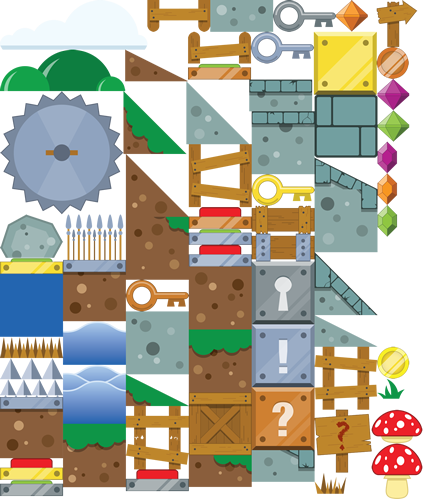
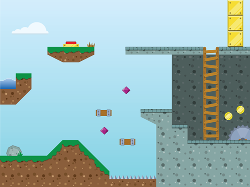
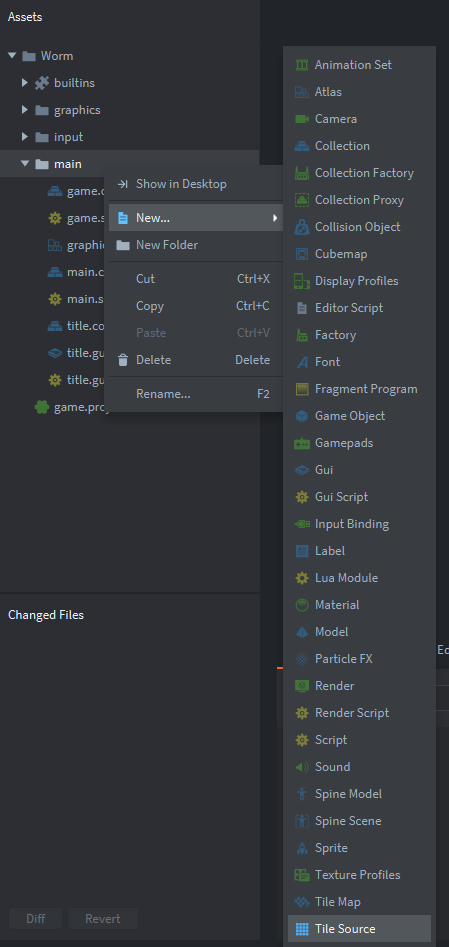
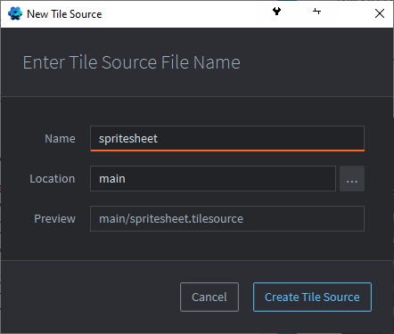
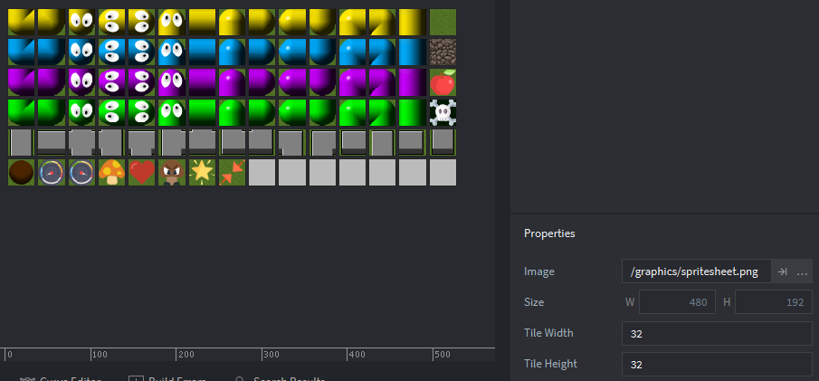

Tutorials for 2D games projects
Worm | Creating a tile source.
Many classic 2D games make use of tiles to create a map. These could be overhead views of terrain, or side-on views of platforms. More recent games started making use of 2.5D terrain where tiles are still used but they are viewed from a different perspective. Modern 3D games use a completely different approach.
Notice how 2D game worlds are created using a set of tiles:
| Tile set | Game world |
 |
 |
In Defold, a Tile Source object holds the set of tiles and a Tile Map object is used to build the game world from those source tiles.
In the worm game, each segment of the worm is a tile. The grass, an apple and walls are also tiles. It is important that all the graphics in tiles are the same size, although you can use more than one tile to build bigger objects as illustrated above. Typically tiles are 16x16, 32x32 or 64x64 pixels.
In this game everything will be a tile to really illustrate their use. In future tutorials the tiles will be an interactive backdrop for other objects moving over the top of them.
- In the assets panel, right click, 'main' and select, 'New...', 'Tile Source'.

- Name the Tile Source, 'spritesheet' and click, 'Create Tile Source'.

- In the properties panel, set the 'Image' property to, '/graphics/spritesheet.png'. You can use the three dots to select the file. If you haven't got the file you haven't unzipped the graphics correctly in stage 2a.
- Press F on the keyboard to zoom out to see the tile set.
You will notice that the tiles aren't cut up properly. That's because the default tile width and height is 16 pixels.
- In the properties panel, change the 'Tile Width' and 'Tile Height' properties to 32.

- Save the changes by pressing CTRL-S or 'File', 'Save All'.
To prepare for this step a single image was created in a graphics application named 'spritesheet.png'. In the graphics application we combined lots of smaller images together, making sure each smaller image was exactly 32x32 pixels.
The next step is to create a game world from our tile source. Stage 3b >
 Craig'n'Dave | Version 1.3
Craig'n'Dave | Version 1.3